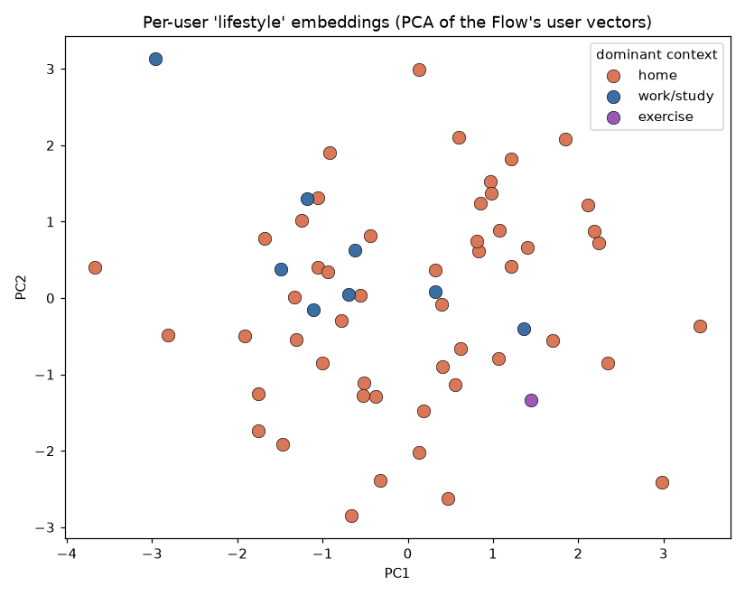
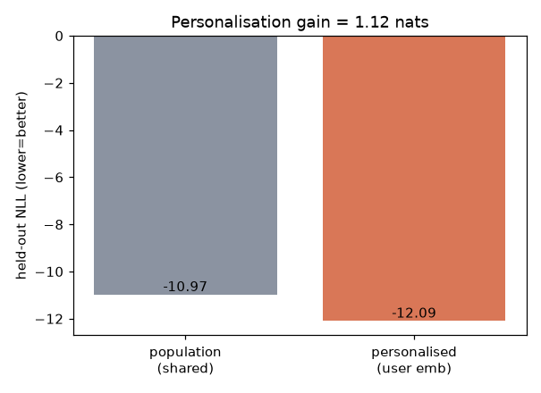

V5 生活型の潜在地図（個人性）
p(行動 | user, 時刻) の user 埋め込みで生活パターンを地図化。個人化でどれだけ当てはまりが良くなるか。
-12.092個人化NLL
-10.972母集団NLL
1.12個人化ゲイン(nats)
60ユーザ数
1. このデータは何か
ExtraSensory（60人・実生活・毎分のスマホ/時計センサ＋自己申告の文脈ラベル）。ここでは頑健な加速度magnitudeの6統計量（mean/std/25/50/75%/エントロピー）を1分ごとの行動ベクトル x として使用。
2. 何を・どう学習したか
条件付き NSF p(x | user, 時刻) を学習（個人化）し、比較用に user を共有した 母集団モデル も学習。
・個人化ゲイン = 母集団NLL − 個人化NLL（大きいほど『人によって「普通」が違う』）。
・学習された user 埋め込みを PCA で2次元化し、各ユーザの優勢な文脈（在宅/仕事・学業/移動/運動）で色分け。
3. 結果
個人化で held-out NLL が -10.97 → -12.09（1.12 nats 改善）。生活型の地図では、在宅中心/通勤中心/運動中心のユーザがおおむね別領域に分かれる。

各ユーザの生活埋め込み（PCA）。色＝優勢な文脈。近い人＝生活パターンが似る。

個人化 vs 母集団の held-out NLL。差＝個人化ゲイン。
4. 図の見方
地図：1点=1ユーザ。近いほど日々の行動分布が似ている＝生活タイプが近い。色のまとまりは、Flowが教師なしで生活文脈の違いを埋め込みに捉えたことを示す。
棒：低いほど当てはまりが良い。個人化が母集団より低い＝『万人共通の「普通」』では取りこぼす個人差を、user埋め込みが埋めている。
5. 解釈と意味・使い道
示すこと：日々の行動の「普通」は強く個人依存で、個人化NFはそれを定量化（ゲイン）でき、教師なしで生活タイプの地図まで得られる。
なぜNFか：単なる分類でなく密度なので、①個人ごとの当てはまり(NLL)で個人差を測り、②埋め込み空間で近傍＝類似ユーザを引ける（cold-startの土台）。
使い道：新規ユーザに『似た生活型の人』の設定/モデルを初期値として当てるパーソナライズ、集団の生活タイプ分析。
正直な限界：特徴は加速度6次元のみ＝粗い。位置/音を足せば型はより鮮明になる。
条件付き Normalizing Flow（zuko NSF）で自動生成。
NF×生活データ探索シリーズの一部。